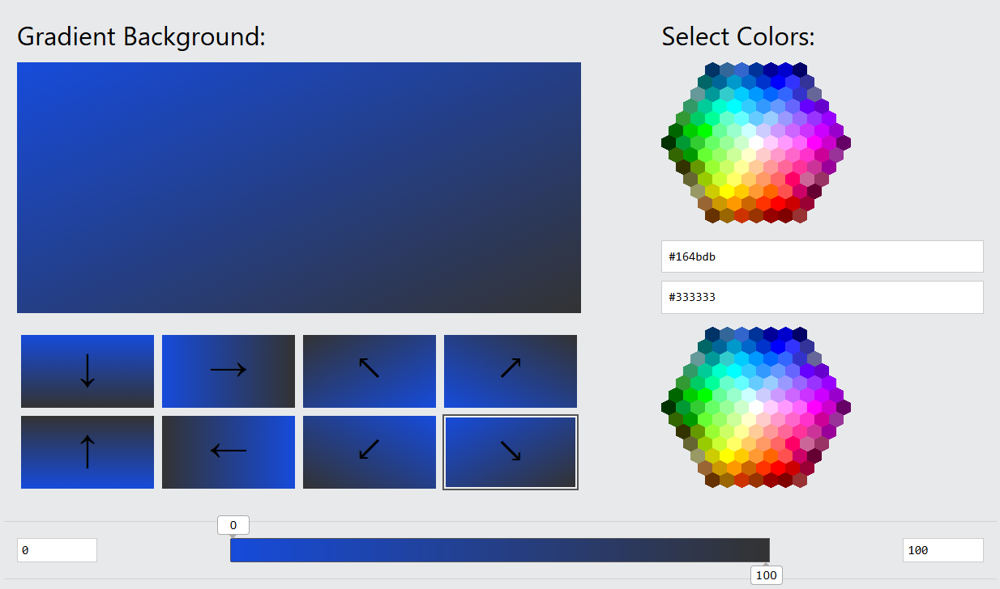

Here is a simple documention and resourses page:
Phase #1 is the first phase of the project. It is the phase where we have to create the basic structure of the website. This includes creating the basic HTML structure, adding CSS to style the website. The structure of our website was inspired by componant-based frameworks like React and Angular. Componant-based structures are easy to maintain and scale, it also makes the code more readable and reusable. We couldn't really achieve the same level of reusability and scalability as componant-based frameworks, due to time limitations and the fact that we are still learning web development.
We had some problems with making the website fully responsive, due to lack of technology and experience, we assure that in Phase #2 we will make the website fully responsive by using the Bootstrap framework.
The banner's background color we used was generated by using this tool:
We used the Font Awesome font and icons toolkit, which is based on CSS. We had to reference the Font Awesome CSS file in our HTML files through a CDN link.
The cards we used where inspired by W3Schools.